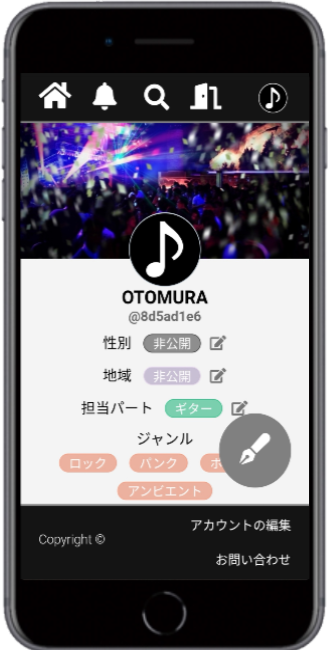

Naoto's Portfolio

ABOUT
長谷川 直人
経歴
- 2014年
芝浦工業大学工学部通信工学科に入学。
入学後は、情報通信工学をハードウェアとソフトウェアの両面から学び、特にマイクロ波や電波の分野に強い興味を抱く。 - 2016年
マイクロ波回路の研究室に配属され、大学3年の後期からマイクロ波回路の設計理論やシミュレーションツールの使用方法など研究に必要な知識を学ぶ。 - 2017年
大学4年時にCRLH線路スタブを用いた逆F級小型マイクロ波増幅器を提案し、設計、評価までの全ての行程を遂行し、その有用性を示す。 - 2018年
大学卒業後、研究で得た技術や知見を活かしたいと考え、高周波増幅器の設計開発を専門とする会社に入社。
入社後は、高効率マイクロ波増幅器の測定・評価、バックシミュレーション、測定の自動化プログラムの作成や技術文書作成などの業務を遂行する。
この経験を通じて、マイクロ波増幅器への興味からプログラミングに興味を抱くようになり、プログラミングで社会貢献したいと考えるようになる。 - 2019年
会社を退職後、WEBプログラミングを独学し同年2月に"音楽好きが集まるSNSアプリ"をコンセプトに"OTOMURA"を開発。
Skill
- Ruby on Rails
- MySQL
- HTML&CSS
- Javascript
- Command Line
- GitHub
- AWS
Works

音楽好きが集まるSNS
音楽好きが集まるSNS
"OTOMURA"
機能紹介動画
仕様
使用言語: Ruby on Rails、Javascriptレイアウト:HTML&CSS
データベース: MySQL
サーバー: AmazonEC2
GitHub: https://github.com/HasegawaNaoto/otomura_app